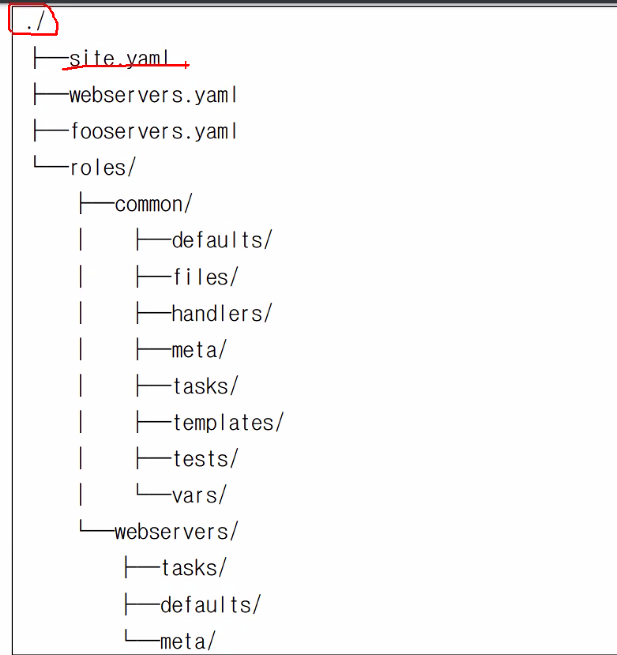
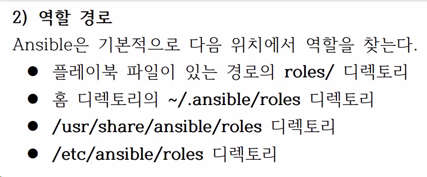

9. 아티팩트 재사용 - 역할
9.1 역할
1) 역할 디렉터리 구조
표준화된 디렉터리와 파일 구조

필요한 디렉토리와 파일만들면 된다. 디렉토리 구조 바뀌면 안된다. 인식 못함.
- tasks.main.yml : 작업정의
- handlers/main.yml :핸들러 정의
- tests/inventory : 역할 테스트용 디렉토리
- tests/test.yml : 역할 테스트용 플레이북
- defaults/main.yml : 기본 변수 정의 (매우 낮은 우선순위)
- vars/main.yml : 변수 정의 (상대적으로 높은 우선순위)
defaults 디렉토리 하위에는 거의 변하지 않는 기본 변수들을 저장함.
roles가 기본 디렉터리이다.
- 가장 중요한 것은 tasks
tasks 폴더 내의 main.yml, main.yaml, main 파일을 찾는다.
default와 vars에 모두 변수가 저장되는데 vars의 우선순위가 높다. - files copy, file, patch 와 같은 파일 관련 디렉터리가 src/ 기본경로로 지정된다.
- templates templetes 기본 경로로 지정
- test 디렉터리는 사람들이 잘 안써..
tasks: handlrs 키워드를 해당 폴더 내에서는 지정하지 않는다.
- 역할 디렉터리 생성
ansible-galaxy init 
플레이에서 역할 사용 ```yaml
hosts: roles:
- common
- webservers ``` roles 디렉토리 밑에 하위 디렉토리 들이 역할임.
작업을 실행하기 위해 pre_tasks, post_tasks 키워드도 있다.
- 작업순서
- pre_tasks 의 task
- pre_tasks 의 handler
- roles 의 task & handler
- tasks 의 task
- post_tasks 의 task
- post_tasks 의 handler
새롭게 플레이를 실행하던 것을 post_tasks를 활용하여!
- name: Simple Web Deploy
hosts: 192.168.200.101
force_handlers: true
vars_files:
- vars/web_vars.yml
tasks:
- name: Copy PHP Contents
copy:
src: 'files/'
dest: '/var/www/html/'
backup: true
- name: Configure Apache Port
template:
src: jinja/ports.conf.j2
dest: '/etc/apache2/ports.conf'
notify:
- Restart Service
- name: Start Service
service:
name: apache2
state: started
enabled: true
handlers:
- name: Restart Service
service:
name: apache2
state: restarted
enabled: true
post_tasks:
- name: Checking
uri:
url: "http://192.168.200.101:/"
ignore_errors: true
delegate_to: 192.168.200.102
4) 역할 재사용
- 롤도 재사용가능 include_role, import_role
5) 역할 여러번 실행
같은 역할을 여러번 실행한다.
6) 역할 의존성
역할간의 의존성은 잘 정의를 하지 않음.
meta/main.yml 에 정의한다.
dependencies:
- role: common
vars:
some_parameters: 3
- role: apache
vars:
apache_port: 80
- role: postgres
vars:
dbname: blarg
other_parameter: 12
실습 뼈대를 만들자! ```shell $ ansible-galaxy init roles/apache
- Role roles/apache was created successfully ```
필요한 파일들만 남기고 지우자
$ tree
.
├── roles
│ └── apache
│ ├── files
│ │ └── index.php
│ ├── handlers
│ │ └── main.yml
│ ├── tasks
│ │ ├── centos_web_package.yml
│ │ ├── main.yml
│ │ └── ubuntu_web_package.yml
│ ├── templates
│ │ └── ports.conf.j2
│ └── vars
│ └── main.yml
└── web.yml
- roles/apache/files/index.php
<?php phpinfo(); ?> - roles/apache/handlers/main.yml ```yaml
- name: Restart Service service: name: apache2 state: restarted enabled: true ```
- roles/apache/tasks/centos_web_package.yml
- name: Install Package for CentOS yum: name: httpd, mod-php state: present when: ansible_distribution == "CentOS" - roles/apache/tasks/ubuntu_web_package.yml
- name: Install Pacakge for Ubuntu apt: name: apache2, libapache2-mod-php update_cache: true state: present when: ansible_distribution == "Ubuntu" - roles/apache/tasks/main.yml ```yaml
import_tasks: ubuntu_web_package.yml when: ansible_distribution == "Ubuntu"
import_tasks: centos_web_package.yml when: ansible_distribution == "CentOS"
name: Copy PHP Contents copy: src: '' dest: '/var/www/html/' backup: true
name: Configure Apache Port template: src: ports.conf.j2 dest: '/etc/apache2/ports.conf' notify:
- Restart Service
name: Start Service service: name: apache2 state: started enabled: true ```
- roles/apache/templates/ports.conf.j2 ```conf Listen
* roles/apache/vars/main.yml
```yaml
---
contents_file: index.php
apache_port: "8080"
web.yml
- name: Simple Web Deploy
hosts: 192.168.200.101
force_handlers: true
roles:
- apache
post_tasks:
- include_vars: roles/apache/vars/main.yml
- name: Checking
uri:
url: "http://192.168.200.101:{{ apache_port }}/{{ contents_file }}"
ignore_errors: true
delegate_to: 192.168.200.102
9.2 Ansible Galaxy
역할을 만들어서 공유가 가능
1) Ansible 컨텐츠
역할
컬랙션 Ansible 2.8 부터 추가된 새로운 패키징 형식
플레이북, 역할, 모듈, 플러그인을 하나의 아티팩트로 패키징함플레이북 번들(APB: Ansible Playbook Bundle) 플레이북, 메타데이터 파일로 구성된 경량 애플리케이션 번들로
OpenShift Origin 클러스터에 애플리케이션을 배포하기 위한 번들
2) ansible-galaxy 명령
(1) 역할 찾기
ansible-galaxy search <SEARCH>
- elasticsearch 키워드 및 geerlingguy 사용자 검색
ansible-galaxy search elasticsearch --author geerlingguy
(2) 역할 정보 확인
ansible-galaxy info <역할명>
(3) 역할 설치
ansible-galaxy install --roles-path . <역할명>
(4) 특정 버전 역할 설치
ansible-galaxy install <역할명,버전>
--roles-path 지정하지 않으면 ~/.ansible/roles 에 설치됨